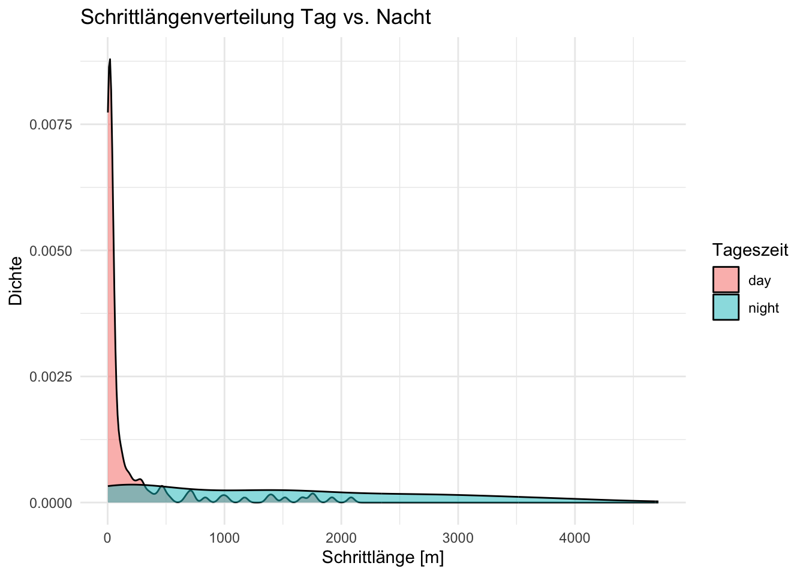
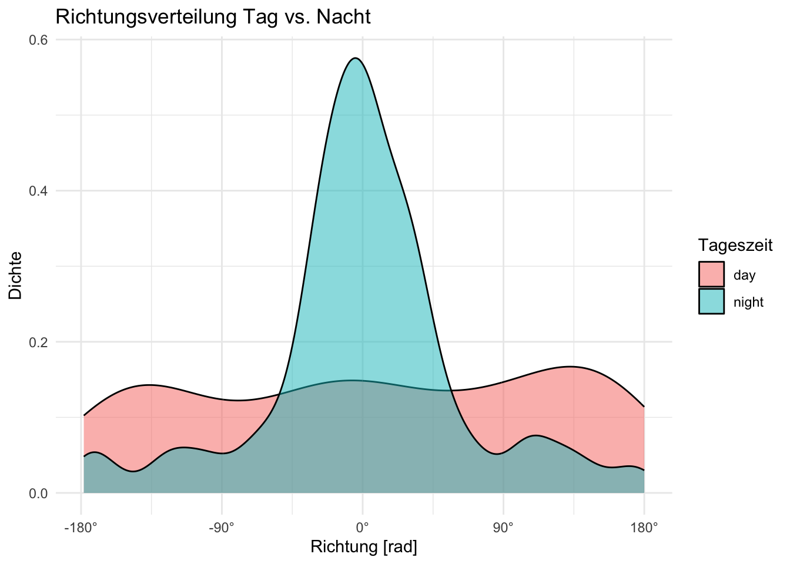
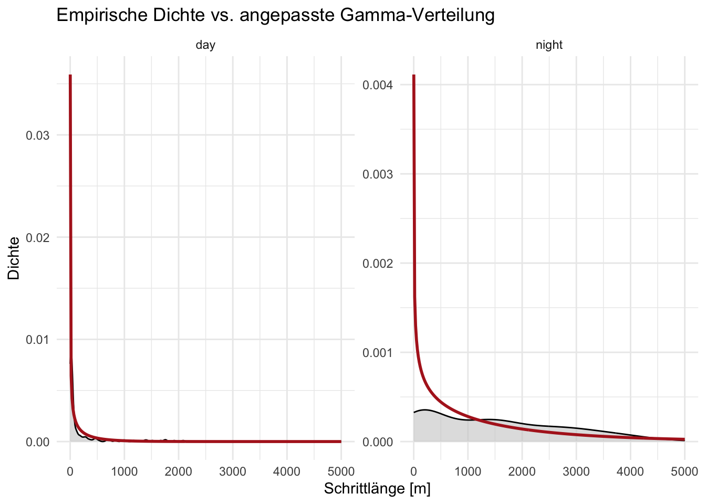
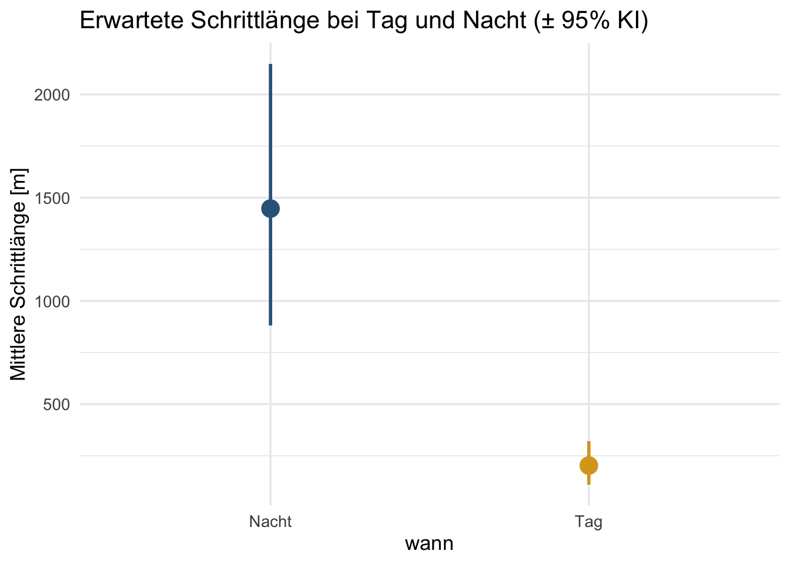

![]()
library(amt)
library(tidyverse)
dat <- read_csv("daten/moll_et_al2021.csv")
head(dat, 3)Übung Einheit 9 (Woche 10): Verteilungen in der Bewegungsökologie
Nach Moll et al. 2021 (Schrittlängen & Richtungen bei Tag und Nacht)
Hintergrund
In dieser Übung versuchen wir zentrale Analyseschritte aus Moll et al. (2021)1 zu wiederholen. Remington Moll dokumentierte eine seltene Langstreckenwanderung eines Weißwedelhirsches (Odocoileus virginianus) und analysierte, wie sich die Schrittlängen- und Richtungsverteilungen zwischen Tag und Nacht unterscheiden.
Die Rohdaten sind bei StudIP:
# A tibble: 3 × 4
id y x t
<chr> <dbl> <dbl> <chr>
1 N17003 40.1 -94.6 1/27/2017 21:01
2 N17003 40.1 -94.6 1/28/2017 2:01
3 N17003 40.1 -94.6 1/28/2017 7:01 Die Spalten x und y enthalten geographische Koordinaten (WGS84, EPSG:4326), t den Zeitstempel im Format MM/DD/YYYY HH:MM.
Teil 1: Daten aufbereiten
Moll et al. (2021) identifizierten die Dispersionsphase als den Zeitraum zwischen dem 4. und 24. November 2017. Die GPS-Daten werden auf ein Intervall von 90 Minuten resampled und anschließend in UTM-Koordinaten (Zone 15N, EPSG:32615) transformiert.
Aufgaben
Parsen Sie die Zeitspalte
tmitlubridate::mdy_hm(). Verwenden Sie dabei die Zeitzone"America/Chicago". Filtern Sie anschließend den Datensatz auf den Zeitraum 4.–24. November 2017.Erstellen Sie einen Track mit
make_track()(CRS: 4326). Verwenden Siesummarize_sampling_rate(), um das mittlere Erfassungsintervall zu bestimmen. Resampling auf 90-Minuten-Intervall mit einer Toleranz von 10 Minuten; entfernen Sie Bursts mit weniger als 3 Punkten.Transformieren Sie den Track ins UTM-Koordinatensystem (EPSG:32615) mit
transform_coords(). Berechnen Sie danach Schritte mitsteps_by_burst()und annotieren Sie jeden Schritt mit der Tageszeit (time_of_day(where = "both")). Wie viele Schritte entfallen auf Tag bzw. Nacht?
Lösungsvorschlag
# 1: Zeitstempel parsen und Dispersionsphase filtern
dat$t <- mdy_hm(dat$t, tz = "America/Chicago")
dat <- filter(dat, t >= ymd("2017-11-04"), t <= ymd("2017-11-24"))
range(dat$t)[1] "2017-11-04 00:01:00 CDT" "2017-11-23 22:30:00 CST"# 2: Track erstellen, Sampling Rate prüfen, resampling
trk <- make_track(dat, x, y, t, crs = 4326)
summarize_sampling_rate(trk)# A tibble: 1 × 9
min q1 median mean q3 max sd n unit
<dbl> <dbl> <dbl> <dbl> <dbl> <dbl> <dbl> <int> <chr>
1 1.48 1.5 1.5 1.51 1.5 3.02 0.102 318 hour trk1 <- trk |>
track_resample(rate = minutes(90), tolerance = minutes(10)) |>
filter_min_n_burst(min_n = 3)
# 3: UTM-Transformation, Schritte, Tageszeit
trk1 <- transform_coords(trk1, 32615)
steps <- trk1 |>
steps_by_burst() |>
time_of_day(where = "both")
table(steps$tod_start_)
day night
140 176 Teil 2: Schrittlängen- und Richtungsverteilungen
Nachdem die Schritte berechnet sind, schauen wir uns die Verteilungen von Schrittlängen und Richtungen getrennt für Tag und Nacht an und passen statistische Verteilungen an.
Aufgaben
Erstellen Sie je eine Abbildung für die Schrittlängenverteilung (
sl_) und die Richtungsverteilung (ta_), jeweils getrennt nach Tageszeit (tod_start_). Beschreiben Sie, was Sie sehen: Welche Tageszeit zeigt längere Schritte? Sehen Sie einen Unterschied in der Richtungsverteilung?Passen Sie mit
fit_distr()eine Gamma-Verteilung an die Schrittlängen für Tag und Nacht getrennt an. Vergleichen Sie die geschätzten Parameter (shapeundscale).Passen Sie eine Von-Mises-Verteilung an
ta_für Tag und Nacht an. Vergleichen Sie den Konzentrationsparameter \(\kappa\) zwischen den beiden Tageszeiten. Was sagt ein großes \(\kappa\) über das Bewegungsverhalten aus?
Lösungsvorschlag
# 1 — Explorative Abbildungen
steps |>
ggplot(aes(sl_, fill = tod_start_)) +
geom_density(alpha = 0.5) +
labs(x = "Schrittlänge [m]", y = "Dichte",
fill = "Tageszeit", title = "Schrittlängenverteilung Tag vs. Nacht") +
theme_minimal()
steps |>
ggplot(aes(ta_, fill = tod_start_)) +
geom_density(alpha = 0.5) +
scale_x_continuous(
breaks = c(-pi, -pi/2, 0, pi/2, pi),
labels = c("-180°", "-90°", "0°", "90°", "180°")
) +
labs(x = "Richtung [rad]", y = "Dichte",
fill = "Tageszeit", title = "Richtungsverteilung Tag vs. Nacht") +
theme_minimal()
# 2 — Gamma für Schrittlängen
sl_day <- fit_distr(filter(steps, tod_start_ == "day")$sl_, "gamma")
sl_night <- fit_distr(filter(steps, tod_start_ == "night")$sl_, "gamma")
sl_day$params$shape
[1] 0.4138257
$scale
[1] 489.2512sl_night$params$shape
[1] 0.6793127
$scale
[1] 2130.492# 3 — Von-Mises für Richtungen
dir_day <- fit_distr(filter(steps, tod_start_ == "day")$ta_, "vonmises")
dir_night <- fit_distr(filter(steps, tod_start_ == "night")$ta_, "vonmises")
dir_day$params$kappa
[1] 0.2694565
$mu
Circular Data:
Type = angles
Units = radians
Template = none
Modulo = asis
Zero = 0
Rotation = counter
[1] 0dir_night$params$kappa
[1] 1.511246
$mu
Circular Data:
Type = angles
Units = radians
Template = none
Modulo = asis
Zero = 0
Rotation = counter
[1] 0# Größeres κ nachts → stärkere Richtungskorrelation → das Tier bewegt sich
# gerichteter (korrelierter Zufallspfad, CRW); tagsüber ist κ kleiner,
# die Bewegung nähert sich einem einfachen Zufallspfad (RW) an.Teil 3: Mittlere Schrittlänge und Unsicherheit
In einem letzten Schritt berechnen wir aus den geschätzten Gamma-Parametern die erwartete Schrittlänge (\(\mu = \text{shape} \times \text{scale}\)) und propagieren die Parameterunsicherheit mit der Delta-Methode, um Konfidenzintervalle zu erhalten.
Aufgaben
Berechnen Sie die mittlere Schrittlänge für Tag und Nacht direkt aus den geschätzten Gamma-Parametern (
shape × scale). Stellen Sie die angepassten Gamma-Dichten zusammen mit den empirischen Dichten (geom_density()) in einer Abbildung dar (je Tageszeit ein Panel).Berechnen Sie ein Konfidenzintervall für die erwartete Schrittlänge für Tag und Nacht.
Visualisieren Sie die mittleren Schrittlängen mit Konfidenzintervallen als
geom_pointrange()-Abbildung. Beschreiben Sie das Ergebnis: Was bedeuten die Unterschiede zwischen Tag und Nacht für das Dispersionsverhalten des Hirsches?
Lösungsvorschlag
# 1 — Mittlere Schrittlänge & Abbildung mit angepassten Kurven
mu_day <- sl_day$params$shape * sl_day$params$scale
mu_night <- sl_night$params$shape * sl_night$params$scale
# Abbildung: empirische Dichte + angepasste Gamma-Kurve
x_seq <- seq(1, 5000, length.out = 300)
sls <- bind_rows(
tibble(
sl_ = x_seq,
dens = dgamma(x_seq, sl_day$params$shape, scale = sl_day$params$scale),
tod_start_ = "day"
),
tibble(
sl_ = x_seq,
dens = dgamma(x_seq, sl_night$params$shape, scale = sl_night$params$scale),
tod_start_ = "night"
)
)
steps |>
ggplot(aes(x = sl_)) +
geom_density(fill = "grey80", alpha = 0.6) +
geom_line(aes(y = dens), data = sls, col = "firebrick", linewidth = 1) +
facet_wrap(~ tod_start_, scales = "free") +
labs(x = "Schrittlänge [m]", y = "Dichte",
title = "Empirische Dichte vs. angepasste Gamma-Verteilung") +
theme_minimal()
# 2: Berechnen der CI
res <- tibble(
wann = c("Tag", "Nacht"),
est = c(sl_day$params$shape * sl_day$params$scale,
sl_night$params$shape * sl_night$params$scale),
lci = c(
(sl_day$params$shape - 2 * sqrt(sl_day$vcov["shape", "shape"])) *
(sl_day$params$scale - 2 * sqrt(sl_day$vcov["scale", "scale"])),
(sl_night$params$shape - 2 * sqrt(sl_night$vcov["shape", "shape"])) *
(sl_night$params$scale - 2 * sqrt(sl_night$vcov["scale", "scale"]))
),
uci = c(
(sl_day$params$shape + 2 * sqrt(sl_day$vcov["shape", "shape"])) *
(sl_day$params$scale + 2 * sqrt(sl_day$vcov["scale", "scale"])),
(sl_night$params$shape + 2 * sqrt(sl_night$vcov["shape", "shape"])) *
(sl_night$params$scale + 2 * sqrt(sl_night$vcov["scale", "scale"]))
)
)
# 3: Visualisierung
res |>
ggplot(aes(x = wann, y = est, ymin = lci, ymax = uci)) +
geom_pointrange(size = 1, linewidth = 1, col = c("goldenrod", "steelblue4")) +
labs(y = "Mittlere Schrittlänge [m]",
title = "Erwartete Schrittlänge bei Tag und Nacht (± 95% KI)") +
theme_minimal(base_size = 13)
# Interpretation: Die Konfidenzintervalle überlappen nicht → der Unterschied
# ist statistisch klar. Nachts legt der Hirsch im Durchschnitt deutlich
# längere Schritte zurück, was eine aktive, gerichtete Dispersionsbewegung
# nahe legt. Tagsüber dominiert kurzes, ungerichtetes Umherbewegen (Ruhe, Äsen).Fußnoten
Moll, R. J. et al. (2021). A ‘landscape of fear’ during dispersal? The case of an exploratory white-tailed deer. Ecology and Evolution, 11, 3641–3652. https://doi.org/10.1002/ece3.7354↩︎